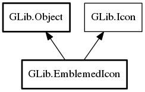

EmblemedIcon
Object Hierarchy:
Description:
EmblemedIcon is an implementation of Icon that supports adding an emblem to an icon.
Adding multiple emblems to an icon is ensured via add_emblem.
Note that EmblemedIcon allows no control over the position of the emblems. See also Emblem for more information.
Namespace: GLib
Package: gio-2.0
Content:
Properties:
Creation methods:
Methods:
Inherited Members:
All known members inherited from class GLib.Object

All known members inherited from interface GLib.Icon